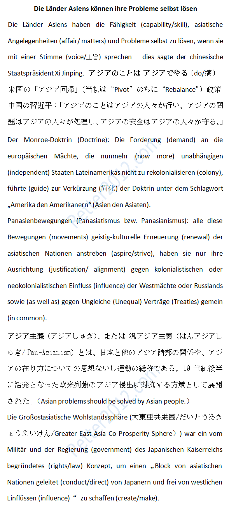

返回主页
亚洲是亚洲人的亚洲

2014年5月，习近平在亚洲相互协作与信任措施会议第四次峰会上的主旨讲话。
亚洲的事情，归根结底要靠亚洲人民办。亚洲的问题，归根结底要靠亚洲人民来处理。亚洲的安全，归根结底要靠亚洲人民来维护。
The Monroe Doctrine was issued in 1823 at a time when nearly all Latin American colonies of Spain and Portugal had achieved or were at the point of gaining independence from the Portuguese and Spanish Empires. The United States, working in agreement with Britain, wanted to guarantee that no European power would move in. President James Monroe first stated the doctrine and the term "Monroe Doctrine" was coined in 1850.
Its primary objective was to free the newly independent colonies of Latin America from European intervention and avoid situations which could make the New World a battleground for the Old World powers, so that the United States could exert its own influence undisturbed.
亚洲主义或称泛亚洲主义（英语：Pan-Asianism）是项日本及其他亚洲诸国团结来反抗西方霸权的理想或运动。在19世纪30至40年代被日本政府当作政治宣传，借此对付欧洲及美国帝国主义来助长自己的大东亚共荣圈政策。
2014：奥巴马西点演讲
战舰美利坚号
The New Cold War: China vs Japan
舆论战、心理战、法律战
德国何以获得以色列信任
德语名言：激励奋斗（5）
德语名言：激励奋斗（6）
文摘（战争和航海）
version:1.0; jobnet@188.com © retter2012.com